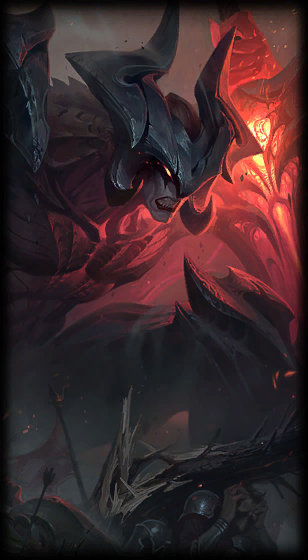

League of Legend
- Summoner's Clash -

Aatrox
the Darkin Blade
Fighter / Tank

Attack : 60

Defense : 38

Magic Resist : 32

Attack Speed : 0.651
Once honored defenders of Shurima against the Void, Aatrox and his brethren would eventually become an even greater threat to Runeterra, and were defeated only by cunning mortal sorcery. But after centuries of imprisonment, Aatrox was the first to find freedom once more, corrupting and transforming those foolish enough to try and wield the magical weapon that contained his essence. Now, with stolen flesh, he walks Runeterra in a brutal approximation of his previous form, seeking an apocalyptic and long overdue vengeance.

Q

W

E

R

Passive : Deathbringer Stance
Periodically, Aatrox's next basic attack deals bonus physical damage and heals him, based on the target's max health.